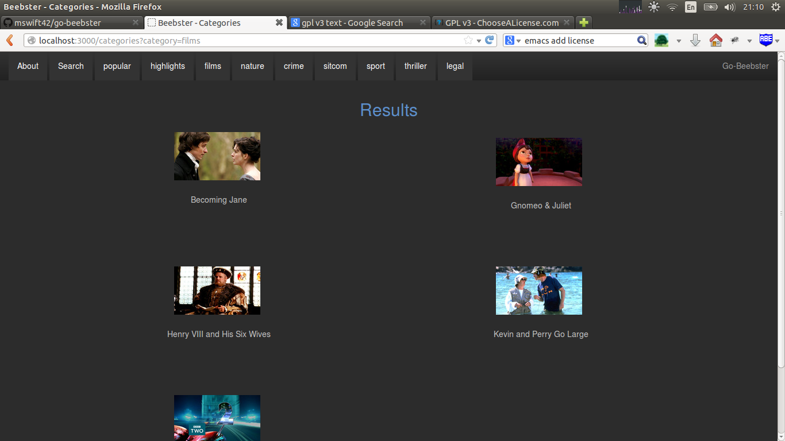

<link rel="import" href="../../bower_components/polymer/polymer.html">

<polymer-element name="screen-shot" attributes="">
  <template>
      <link rel="stylesheet" href="screen-shot.css">
      <div id="imagecontainer">
          
</div>
  </template>
  <script>
    (function () {
      'use strict';

      Polymer({
        // define element prototype here
      });

    })();
  </script>
</polymer-element>
